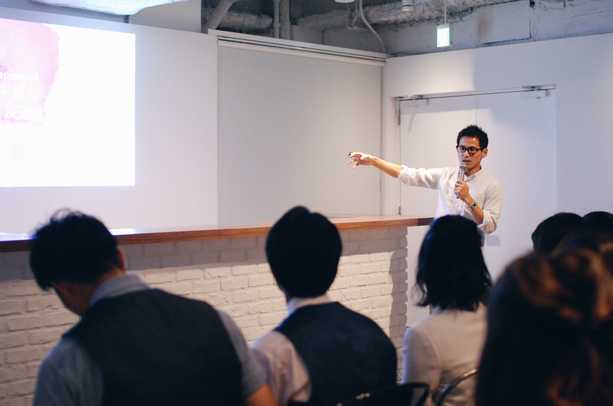
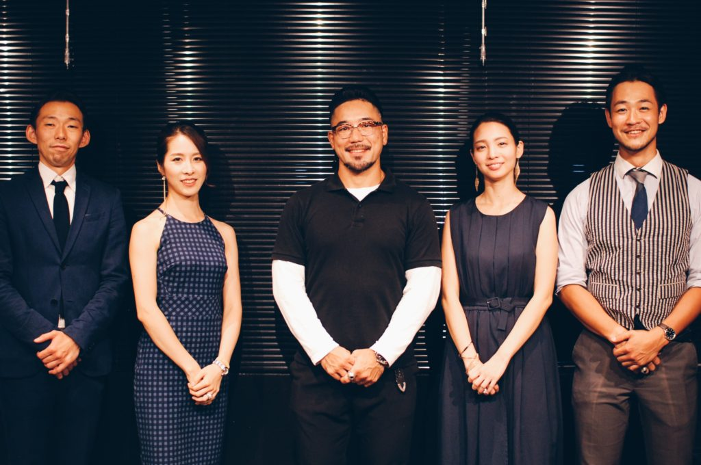
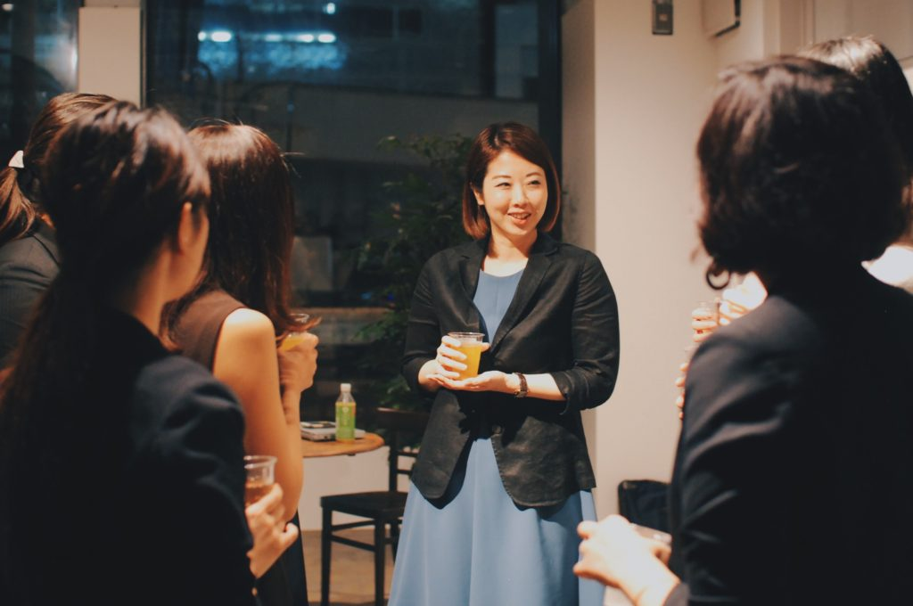
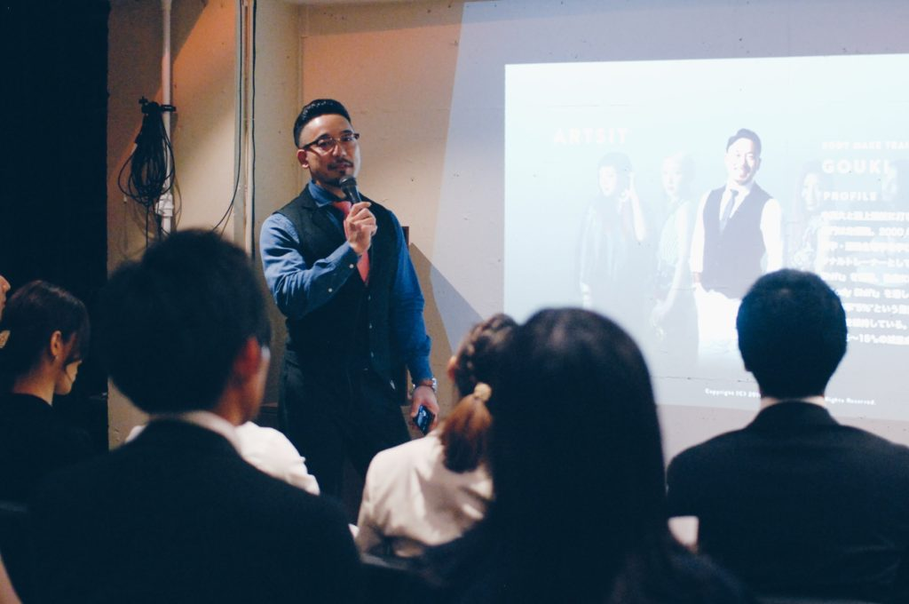

VOICE
参加者の声
友人の紹介で参加しました。セミナー内容がとても今の自分にとってピッタリもので将来をとても考えさせられました。自己啓発本などとは違う生の経営者の声はリアルで響きました。是非2回目も参加したいです。
M.Hさん
会社員
こういったセミナーに参加するのは初めてで緊張したのですが、参加者の皆さんが歳も近くていい方ばかりだったので安心しました。セミナーは普段聞いた事もない新鮮な内容ばかりでとても面白かったです。また参加したいです。
M.Tさん
販売員
普段からセミナーや勉強会に参加するのですが、企画がとてもユニークでとても楽しい時間を過ごせました。特にセミナー後の懇親会では歳が近くて頑張っている方々と繋がれたのでとても良い刺激になりました。ありがとうございました。
A.Aさん
公務員
BACK NUMBER
過去開催のイベント

”BEYOND” AT LIFEJUNCTION VOL.06
2018年7月18日、第6回目”BEYOND” AT LIFEJUNCTIONが開催。ゲストスピーカーに「企業家 中村 勇気氏」をお招きし、「”この時代になった今、求められる人材とは？”」「”企業寿命よりも個人寿命が長い時代において身につけるべき実力とは？”」

”BEYOND” AT LIFEJUNCTION VOL.05
2018年7月10日、第5回目”BEYOND” AT LIFEJUNCTIONが開催。ゲストスピーカーにTEAM COLERS ボディメイク トレーナーGOUKI氏をお招きし、見た目を変えるトータルプロデュースを指導するアーティスト視点から「相手に確実に印象を残すには？」

”BEYOND” AT LIFEJUNCTION VOL.04
2018年6月13日、第4回目”BEYOND” AT LIFEJUNCTIONが開催。ゲストスピーカーに「スローガン株式会社 HR&PR室 室長 採用支援コンサルタント 金子 歩美氏」をお招きし、「市場で評価され、自分の人生を生きる20代のキャリアとは」をテーマにお話

”BEYOND” AT LIFEJUNCTION VOL.03
2018年6月9日、第3回目”BEYOND” AT LIFEJUNCTIONが開催。ゲストスピーカーにTEAM COLERS ボディメイク トレーナーGOUKI氏をお招きし、見た目を変えるトータルプロデュースを指導するアーティスト視点から「相手に確実に印象を残すには？」